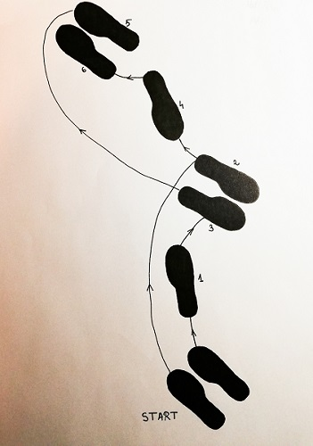
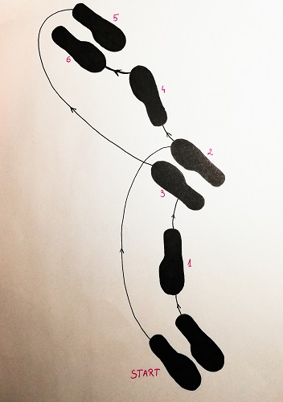

Viennese Waltz steps
Technique and styles
The Viennese waltz is a rotary dance where the dancers are constantly turning either in a clockwise (natural) or anti-clockwise (reverse) direction interspersed with non-rotating change steps to switch between the direction of rotation. A true Viennese waltz consists only of turns and change steps. Other moves such as the fleckerls, American-style figures and side sway or underarm turns are modern inventions and are not normally danced at the annual balls in Vienna. Furthermore, in a properly danced Viennese waltz, couples do not pass, but turn continuously left and right while travelling counterclockwise around the floor following each other.
The competitive style of Viennese waltz has a reduced number of steps: change steps, passing changes, hesitations, hovers, the contra check, and natural and reverse turns.
International-style Viennese waltz
International-style Viennese waltz is danced in closed position. The syllabus is limited to natural and reverse turns, closed and open changes, fleckerls, contra check, left whisk, and canter-time pivot turns (canter pivots).
In World Dance Council competition, canter pivots are excluded.
American-style Viennese waltz
American-style Viennese waltz has much more freedom, both in dance positions and syllabus.
Natural and Reverse turns
A natural turn is a dance step in which the partners turn around each other clockwise. Its near-mirror counterpart is the reverse turn, which is turning to the counterclockwise.

Man's steps (forward)
Start position (facing line of dance)
Rhythm - One, two, three.

Woman's steps (backwards)
Start position (backwards or against the line of dance)
Rhythm - One, two, three.
This terminology is used mainly in the "International Standard" group of ballroom dances. "Natural turn" and "reverse turn" are names of syllabus figures in waltz, Viennese waltz, foxtrot, quickstep. In addition, the words natural and "reverse" are used in some other figures that amount to turning to the right or left, respectively, e.g. natural twist turn in tango and foxtrot.
The name "natural" has two explanations. In a standard ballroom closed dance position the partners are somewhat shifted to the left with respect to each other, which makes the right turn easier. The second reason is related to progress around the floor along the counterclockwise line of dance. Turning to the right is partly compensated for by the line of dance's leftward curve, so that it takes less effort to stay on line of dance while turning to the right than while using opposite footwork and turning to the left, especially at the corners.